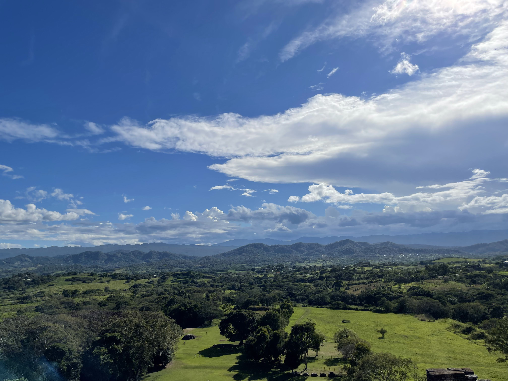

carol rose little
main
• research • teaching
• cv • translations
•
email
• en español

View from the Mayan ruins of Toniná Chiapas, January 2022.
publications
See my CV for a full list of publications.
Dissertation and archive
- Mutual dependences of nominal and clausal syntax in Ch'ol [link]
- Collection of Ch'ol Materials at the Archive for the Indigenous Languages of Latin America (AILLA) [link]
Submitted or under revision
- Impersonal uses of the first person inclusive in Ch'ol.
Accepted or Forthcoming
- Xkoltyayaj 'the one who helps': Experiences on interpreting a trial into Ch'ol. Current Anthropology
- Self-translation as (re)creation: An essay and an interview with Ch'ol poet Juana Peñate Montejo. Translation Review
- Mirco-variation in the grammar of comparison and measurement in Ch’ol (Mayan). With Luismi Toquero-Perez Accepted at International Journal of American Linguistics [pre-pub link]
- Forthcoming. Collaborative corpus creation: A Chol case study. Proceedings of the 39th West Coast Conference on Formal Linguistics (WCCFL 39). First author. Juan Jesús Vázquez Álvarez, Jessica Coon, Nicolás Arcos López, and Morelia Vázquez Martínez.
2025
- Self-translation as (re)creation: An essay and an interview with Ch'ol poet Juana Peñate Montejo. Translation Review
[link]
2024
- Translating Ch'ol Poetry into English: An Abecedarian Essay. Anthropology and Humanism with Charlotte Friedman [link]
- The history of the Summer Institute of Linguistics at the University of Oklahoma. 2024 LSA proceedings. [pre-print link]
- Cheyenne demonstratives: A corpus study. Margaret Noodin (eds) Papers of the 52nd Algonquian Conference. Michigan State University Press. Co-First Author with Sarah Murray; Chloe Ortega, Wayne Leman, Richard Littlebear, Jessie Angel-Brien, Haley Ash-Eide, and Desta Sioux Calf. [link]
- Type-shifters in headless relative clauses manuscript available. Natural Language and Linguistic Theory. Coauthors with Scott AnderBois and Jessica Coon. [link]
- Impersonal morphosyntax in generative grammar. Language and Linguistics Compass. [link]
2022
- Against a generalized quantifier analysis of certain quantity expressions in Ch’ol. In John R. Starr, Juhyae Kim, and Burak Oney (Eds) Proceedings of SALT 32. [link]
- Classifiers can be for numerals or nouns: Two strategies for numeral modification. Co-First Author with Mary Moroney; Justin Royer. Glossa. [link]
- Classifying Classifiers. Proceedings of the Eleventh Conference on the Semantics of Under-Represented Languages in the Americas. With Mary Moroney and Justin Royer. [link]
- Three translations of Juana Peñte Montejo’s poetry from Ch'ol to English. Journal of Latina Critical Feminism. With Charlotte Friedman.
2021
- The Finnish partitive in counting and measuring constructions. In Michael Franke, Nikola Kompa, Mingya Liu, Jutta L. Mueller, and Juliane Schwab (eds.) Proceedings of Sinn und Bedeutung 24. vol. 2, 336-353. Osnabrück: Osnabrück University. With Peter Sutton. [link]
2020
- Left branch extraction, object shift and freezing effects in Tumbalá Ch'ol. Glossa: A Journal of General Linguistics, 5(1), 26. [link]
- Mutual dependences of nominal and clausal syntax in Ch'ol. Cornell doctoral dissertation [link]
2019
- Classifiers and the definite article. In Proceedings of the 49th North East Linguistics Society, Maggie Baird and Jonathan Pesetsky (Eds), 209--220. Amherst, MA: GLSA. With Ekarina Winarto. [pdf]
2018
- A Binary Feature Analysis of Mi'gmaq Number Agreement. Proceedings of the 35th West Coast Conference on Formal Linguistics. edited by Wm. G. Bennett, Lindsay Hracs, and Dennis Ryan Storoshenko. Somerville, MA: Cascadilla Proceedings Project. [pdf]
- Possessed numerals in Ch'ol. In Proceedings of the Tenth Conference on the Semantics of Under-Represented Languages in the Americas, Kimberly Johnson and Alex Goebel (Eds), 95--116. Amherst, MA: GLSA. [pdf]
- A feature-based analysis of the Ch'ol (Mayan) person paradigm. In Karee Garvin, Noah Hermalin, Myriam Lapierre, Yevgeniy Melguy, Tessa Scott and Eric Wilbanks (Eds), Proceedings of the Forty-Fourth Annual Meeting of the Berkeley Linguistics Society. pages 147--161. Berkeley, CA: Berkeley Linguistics Society. [pdf]
- A compositional morphosemantic analysis of exclusivity in Ch'ol. Proceedings of the 2018 LSA. With Mia Wiegand. [pdf]
- Inanimate nouns as subjects in Mi'gmaq: Consequences for agreement morphology. Proceedings of WSCLA 21. [pdf]
- Subjects, Animacy and Agreement in Mi'gmaq Transitive Verbs. Papers of the 47th Algonquian Conference.
2017
- Negation and indefinite pronouns in Mi'gmaq. Papers of the 46th Algonquian Conference.Edited by Monica Macaulay, and Margaret Noodin. MSU Press.
2016
- Modeling obviation in Algonquian. Proceedings of Semantics of Under-Represented Languages in the Americas (SULA) 9 . with Mary Moroney. [link]
2015
- Language research and revitalization through a community-university partnership: The Mi'gmaq research partnership. Journal of Language Documentation and Conservation 9. 292-306. with Travis Wysote, Elise McClay and Jessica Coon. [pdf]